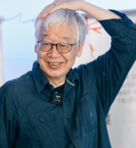
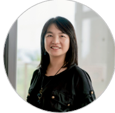

🎙️ 2026 挺好 Campus 司儀總稿
主持人：古月縈 (主講) × 柯慶灣 (協助)
☀️ 上午場：USR SIG
🏆 下午場：競賽發表
09:30 - 10:00
報到及入座引導
(09:55 提醒)
各位貴賓，活動即將在 5 分鐘後正式開始，請各位就坐，謝謝。
10:00 - 10:10
開場與大合照
各位貴賓，以及投入教育創新的教育夥伴們，大家早安，大家好！歡迎各位在今天齊聚在臺南大學，參與上午場的「USR SIG |多校同行，一場實踐：聯合課程設計到學教影響力」交流活動。
本次活動特別感謝 NPOChannel 公益平台指導，並由淡江大學 USR 計畫「淡水好生活」主辦，以及感謝地主臺南大學「經營與管理學系」的熱情協辦。
我們先邀請《淡水好生活》計畫主持人，淡江大學建築學系黃瑞茂教授跟我們勉勵~

黃瑞茂 教授 (計畫主持人)
謝謝黃教授！
今年的「挺好 Campus：公益永續挑戰賽」，串連了中山、臺南、嘉義、靜宜與淡江五所大學。今天，我們將看見「多校共構」的真實教學現場。
活動開始前，我們要先為今日的行動留下一張大合照。我們的攝影師會在台上準備為大家拍攝。
司儀引導拍照：請看攝影師，3、2、1、請微笑。謝謝大家，請回座。
10:10 - 10:20
張幼霖 NPOchannel 創辦人發言
我們歡迎 NPOchannel 公益平台的創辦人——張幼霖博士上台致詞。讓我們以熱烈的掌聲歡迎張幼霖博士！

張幼霖 創辦人
謝謝張創辦人。
10:20 - 11:15
教師發表 (10分鐘/位)
接下來的 50 分鐘，是「教師發表」環節。由五位來自不同學校與領域的老師，與大家分享他們是如何將議題融入課程、發動學生行動，並在各自的脈絡中實踐。
首先，歡迎臺南大學 經營與管理學系 蕭詠璋教授兼系主任。蕭教授將與我們分享他在「在職專班」的「新產品開發」課程實踐。讓我們掌聲歡迎蕭教授！

蕭詠璋 教授
謝謝蕭教授的分享。緊接著，歡迎中山大學社會創新研究所 楊士奇助理教授。楊老師將分享「文化設計與社區實作」課程實踐。掌聲歡迎楊老師！

楊士奇 老師
謝謝楊老師的分享。下一位，我們要歡迎靜宜大學資訊管理學系 康贊清助理教授。有別於一般的課堂建制，康老師帶領的是「學生組隊自主參與」的模式。讓我們掌聲歡迎康老師！

康贊清 老師
謝謝康老師的分享。接下來，我們歡迎嘉義大學數位學習設計與管理學系朱彩馨教授，分享「電子商務」課程實踐。掌聲歡迎朱教授！

朱彩馨 教授
謝謝朱教授的分享。最後要歡迎淡江大學企管系涂敏芬教授。分享榮獲遠見績優獎的「永續設計與創新」課程，以及首創的「學教影響力儀表板」。掌聲歡迎涂教授帶來教學設計的經驗分享！

涂敏芬 教授
謝謝涂教授的分享。
11:15 - 11:50
交流對話
感謝五位老師的分享。現在進入「交流對話」時間。
我們想邀請剛剛發表的五位老師(以及張幼霖博士)一起回到台上就座。
歡迎現場來賓踴躍舉手提問！
※ 司儀引導現場 QA，注意時間控管。結束前 3 分鐘提醒。
謝謝各位熱烈的交流，也再次用掌聲感謝台上所有講者無私的分享！請各位講者回座。
11:50 - 12:00
結語、致贈淡水伴手禮
今天的 USR SIG 活動也來到了尾聲。
為了感謝各位老師的傾囊相授，我們從淡水帶來了充滿在地心意的「淡水伴手禮」致贈給各位講者。邀請《淡水好生活》計畫主持人，淡江大學建築學系黃瑞茂教授上台頒贈！
致贈儀式與合影
再次感謝各位今天的參與。上半場的活動到此圓滿結束，下午的時段為學生成果分享與競賽，請只參與上半場活動的來賓離開時，記得帶走您的隨身物品。祝大家有個美好的週末！
結語後 → 移動用餐
張老師結語完畢後，走回台前
感謝上半場所有老師以及創辦人的分享！下午的活動將於13:15準時開始，請各位評審、老師，以及參加的同學們13點開始就可以慢慢返回現場就坐。因為活動人數眾多，會依序讓大家到各個教室享用午餐，請大家等候安排。
首先我們先請各位評審跟隨工作人員離場。(仲-B309)
接著有請老師們至講台後方的休息室用餐。(灣)
請臺南大學的學長姐們離場。(品涵-E302、E303)
請淡江大學及嘉義大學的同學們離場。(艾倫-F101)
請中山大學及靜宜大學的同學們離場。(廷萱-F103)
13:15 - 13:40
下午開場 + 開幕致詞
歡迎大家回來！午餐有沒有吃飽呀?
大家要記得簽到唷！
上午聆聽了五所學校老師們的精彩分享，相信大家都收穫滿滿。下午，我們要進入今天的重頭戲——挺好Campus 2026公益永續挑戰賽的成果發表與頒獎典禮！
首先，先來一起欣賞一部影片！ 有請NPO Channel公益平台創辦人 張幼霖老師上台致詞。
張幼霖 創辦人
感謝張老師！
接下來，為大家介紹我們陣容堅強的評審團。各位評審聽到自己名字的時候，請站起來讓大家認識一下——

李慶芳 教授 (雲林科技大學企管系)

周信輝 教授 (國立成功大學企管系)

蘇小真 執行長 (家樂福暨文教基金會)

黃昭勇 總監 (CSR@天下)
讓我們再次以熱烈的掌聲，感謝各位評審今天的到來！
※ 若系主任代為介紹，退至側邊等候即可
13:35 - 13:40
大合照
感謝各位評審今天的到來！在正式開始之前，我們先來拍張大合照！
請評審、老師、各位同學在位置上坐好。
有請攝影工作人員就位！
謝謝大家，緊接著就要進入今天的成果發表！
13:40 - 15:22
競賽發表規則說明
現在(以防有同學沒聽到再次)為大家說明待會的發表規則：
每一組的發表時間是五分鐘。計時結束前一分鐘會有一聲短鈴(叮)及提示牌如後面所示，時間到 則會有兩聲長鈴(叮叮)，請同學聽到鈴聲後結束發表。
今天總共有三個獎項的組別。
首先 我們進入「永續模式獎」組別的發表！
🟠 永續模式獎 (4組)
有請今天的第一組淡江大學 食現夢想家 上台進行發表，也請臺南大學 用愛翻轉未來組 請跟隨工作人員移動到等待區就坐。
(發表後) 感謝「食」現夢想家的發表！
接下來有請臺南大學 用愛翻轉未來組別 上台進行發表，請臺南大學 微光種子組 移動至等待區就坐。
(發表後) 感謝「用愛翻轉未來」的發表！
接下來有請臺南大學 微光種子組 上台進行發表，請嘉義大學 行動支Food組 移動至等待區就坐。
(發表後) 感謝「微光種子」的發表！
接下來有請嘉義大學 行動支Food組 上台進行發表，請嘉義大學 集食點光組 移動至等待區就坐。
(發表後) 感謝「行動支Food」的發表！
到此，永續模式獎的4組都已發表完成，也恭喜各組順利完成發表，謝謝你們為大家帶來精采的成果展示。
🟠 公益實踐獎 (6組)
那接下來，我們就進入到「公益實踐獎」的發表！
有請嘉義大學 集食點光組 上台進行發表，請臺南大學 食在有愛組 移動至等待區就坐。
(發表後) 感謝「集食點光」的發表！
接著有請臺南大學 食在有愛組 上台進行發表，請淡江大學 滬食行動組 移動至等待區就坐。
(發表後) 感謝「食在有愛」的發表！
接著有請淡江大學 滬食行動組 上台進行發表，請靜宜大學 糕興遇見你組 移動至等待區就坐。
(發表後) 感謝「滬食行動」的發表！
接著有請靜宜大學 糕興遇見你組 上台進行發表，請嘉義大學 湯心比心 NGO集食計畫組 移動至等待區就坐。
(發表後) 感謝「糕興遇見你」的發表！
接著有請嘉義大學 湯心比心 NGO集食計畫組 上台進行發表，請中山大學 第二組 移動至等待區就坐。
(發表後) 感謝「湯心比心｜NGO集食計畫」的發表！
接著有請中山大學 第二組 上台進行發表，請中山大學 資產支配者組 移動至等待區就坐。
(發表後) 感謝「第二組」的發表！
現在公益實踐獎的6組都發表完成，再次感謝以上組別今天的用心準備與精采呈現。
🟠 創意突破獎 (7組)
接下來，我們進入「創意突破獎」的發表！
有請中山大學 資產支配者組 上台進行發表，請嘉義大學 豆米愛心實驗室組 移動至等待區就坐。
(發表後) 感謝「資產支配者」的發表！
接著有請嘉義大學 豆米愛心實驗組 上台進行發表，請嘉義大學 i不釋手組 移動至等待區就坐。
(發表後) 感謝「豆米愛心實驗室」的發表！
接著有請嘉義大學 i不釋手組 上台進行發表，請臺南大學 集食救援組 移動至等待區就坐。
(發表後) 感謝「i不釋手」的發表！
接著有請臺南大學 集食救援組 上台進行發表，請靜宜大學 母愛送糕家組 移動至等待區就坐。
(發表後) 感謝「集食救援」的發表！
接著有請靜宜大學 母愛送糕家組 上台進行發表，請臺南大學 小事大愛組 移動至等待區就坐。
(發表後) 感謝「母愛送糕家」的發表！
接著有請臺南大學 小事大愛組 上台進行發表，請嘉義大學 Errㄙㄡˇㄘㄜ￣組 移動至等待區就坐。
(發表後) 感謝「小事大愛」的發表！
接著有請嘉義大學 Errㄙㄡˇㄘㄜˉ組 上台進行發表。
(發表後) 感謝「Errㄙㄡˇㄘㄜˉ」的發表！
所有組別的成果發表到這邊告一段落，讓我們給今天所有參賽同學最熱烈的掌聲！
現在有請各位評委們隨工作人員前往E302
15:30 - 15:40
填問卷
有請冶行影響力設計共同創辦人 許程閔 同學上台幫大家說明！
等許成閔上台，退至側邊等候，問卷說明完後接回麥克風
15:40 - 16:00
休息
謝謝大家！接下來的二十分鐘會讓大家稍作休息、補充能量。
先有請各位評審跟著工作人員移動到指定地點，進行成績統計與討論。
如果想出去走走的話，也可以到校園裡欣賞盛開的阿勃勒，感受校園午後的悠閒時光，稍作放鬆。
廁所出去左轉。
提醒大家於16點準時回到現場，接續後面的活動。
16:00 - 16:10
Warm Up + 學習321問卷
歡迎大家回來。
接著我們有請張幼霖老師。
謝謝張幼霖老師！
16:10 - 16:15
頒發教師感謝狀
接下來，我們要請創辦人上台頒贈！頒發教師感謝狀。
有請各位老師上台，我們一起來表達感謝——掌聲歡迎老師們！
柯慶灣協助引導老師就位，頒完感謝狀後拍照
謝謝所有老師！
16:15 - 17:00
頒獎典禮正式開始
好，接下來是大家期待已久的頒獎典禮！
總共有四個獎項，我們現在依序開始。
🏆 公益成果獎 (16:15–16:25)
首先，有請李慶芳教授上台為我們頒發公益成果獎組別的獎項！
李慶芳 教授
現在宣布公益成果獎得獎隊伍為——？
請得獎隊伍上台！
感謝李慶芳教授，也恭喜得獎隊伍！
🏆 創意突破獎 (16:25–16:35)
接下來，有請周信輝教授上台為我們頒發創意突破獎組別的獎項！
周信輝 教授
現在宣布創意突破獎得獎隊伍為——？
請得獎隊伍上台！
感謝周信輝教授，也恭喜得獎隊伍！
🏆 公益實踐獎 (16:35–16:45)
接下來，有請蘇小真執行長上台為我們頒發公益實踐獎組別的獎項！
蘇小真 執行長
現在宣布公益實踐獎得獎隊伍為——？
請得獎隊伍上台！
感謝蘇小真執行長，也恭喜得獎隊伍！
🏆 永續模式獎 (16:45–16:55)
最後，有請黃昭勇總監上台為我們頒發永續模式獎組別的獎項！
黃昭勇 總監
現在宣布永續模式獎得獎隊伍為——？
請得獎隊伍上台！
感謝黃昭勇總監，也恭喜得獎隊伍！
16:55 - 17:00
下午場大合照
今天所有的獎項都頒完了，恭喜所有得獎隊伍！
不管有沒有得獎，今天在這裡每一個人都值得一個掌聲。
有請張幼霖
(拍照)
17:00 - 17:30
大會結尾閉幕
今天到這邊告一段落，但希望大家帶走的東西不只是今天的記憶。期待未來大家繼續在公益、永續這條路上發光，我們下次見！
挺好Campus 2026公益永續挑戰賽，正式閉幕，謝謝大家！
最後提醒大家——請記得掃描QR code進行簽退唷！